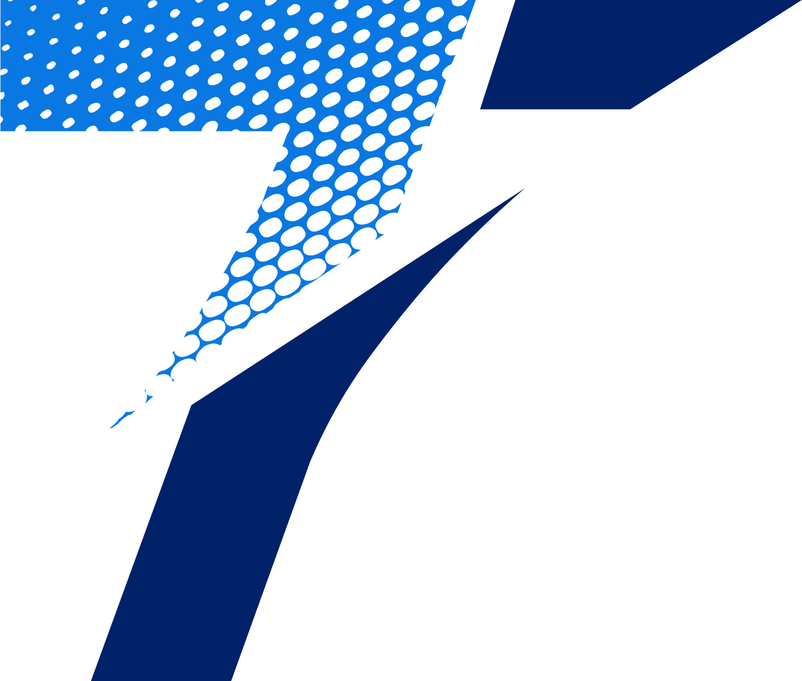

Fractional CIO for Nonprofits
Most nonprofits don't struggle because their people don't care enough — they struggle because the systems behind them, the people, processes, and tools, were never built to scale. 7Talents comes alongside your team to bring clarity, alignment, and a practical path forward.
A Different Perspective
Your tools weren't designed all at once — they grew up around whatever the moment needed. Years later, nobody fully trusts the numbers because the systems were never asked to work together.
Instead of technology serving the way your team actually works, your team has quietly rebuilt its workflows around the limitations of the tools. That's backwards, and it's costing you time.
Every technology decision happens under pressure, by whoever's closest to the problem — with no shared plan tying it back to where your organization is headed next.
Clarity before selection. Alignment before implementation.
A Guide Who's Sat Where You're Sitting
7Talents is a nonprofit advisory practice focused on helping organizations align their systems, data, and operations with the work they're called to do. Founded by Justin Miller, it was built out of more than 20 years serving in nonprofit technology and leadership roles — not just advising from the outside, but working within organizations to navigate the real challenges of systems, staffing, and change.
7Talents works exclusively with nonprofits — including community foundations and growing organizations — helping them step back, gain clarity, and move forward with confidence in how their systems support their mission. Every engagement is led directly by Justin, ensuring continuity, context, and a trusted relationship throughout the process.
How we approach this work
The Plan
We start with a discovery call, then build a clear understanding of how your organization operates today — through interviews with key leaders and staff, and a review of your current systems and workflows.
We define an approach that aligns with your mission and operations — identifying the gaps between where you are and where you need to be, and shaping clear system and process recommendations.
You leave with a prioritized, board-ready roadmap and clear next steps — with the option to have 7Talents guide execution as your fractional CIO.
How We Help
A comprehensive, outside-in look at how your people, process, and technology actually work together — and where they don't.
Bring your roadmap to life. We execute directly — so the plan doesn't stall out after the report is delivered.
Ongoing strategic technology leadership — without the overhead of a full-time executive hire.
Where This Leads
Clean data your board can trust. A technology roadmap tied to real strategy, not just the next fire. A staff that spends its energy on the community you serve, not on reconciling three different spreadsheets. That's what a clear systems foundation makes possible.
Book a discovery call and let's talk about whether a systems assessment is the right next step for your organization.
Book a Discovery Call